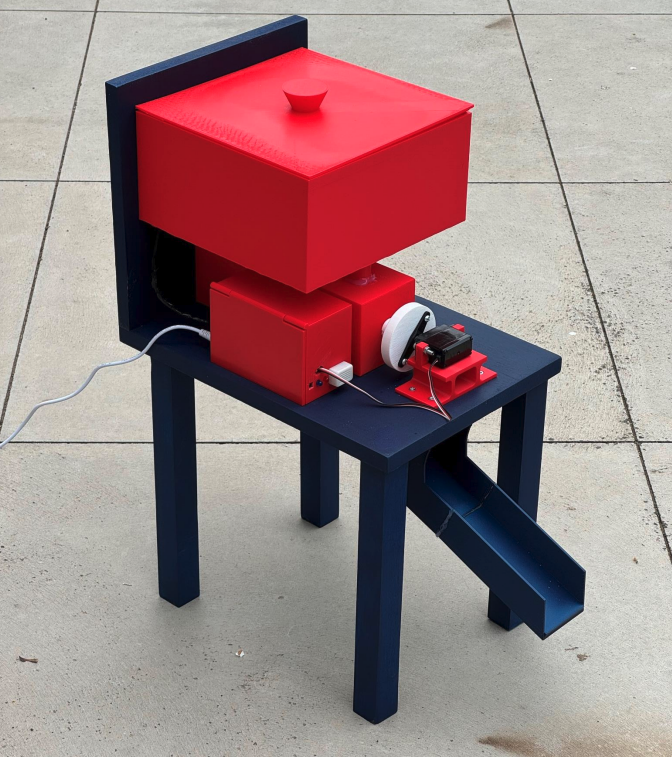
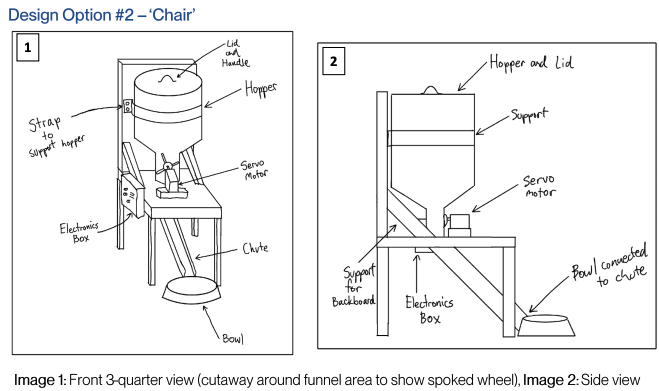
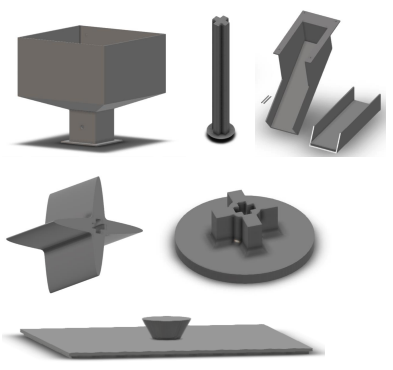
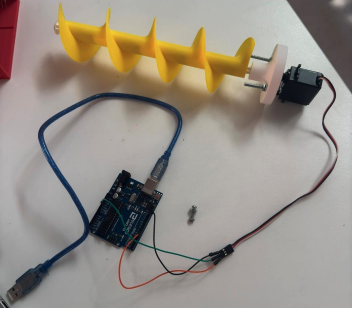
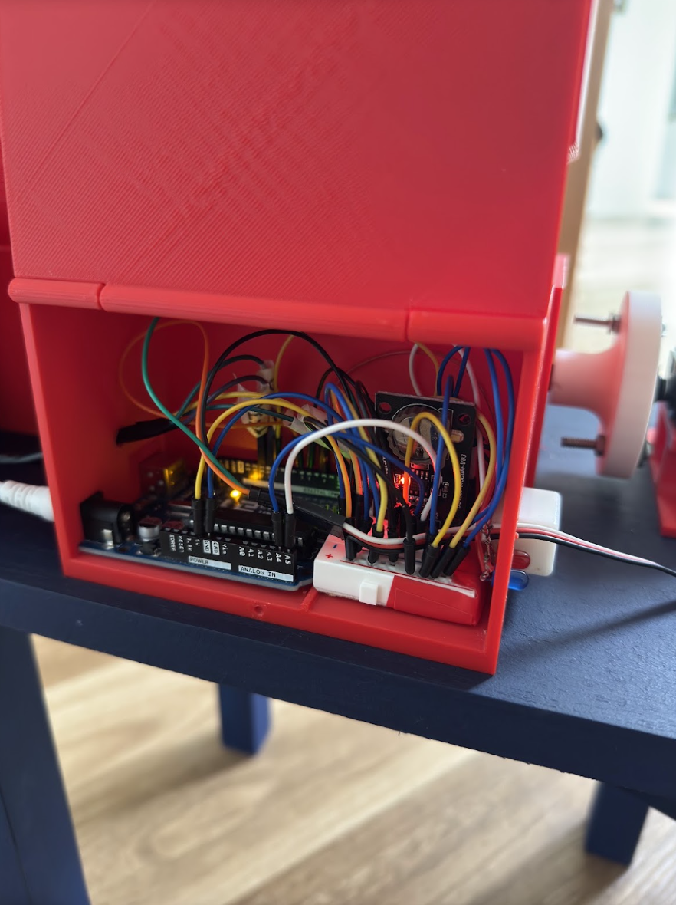
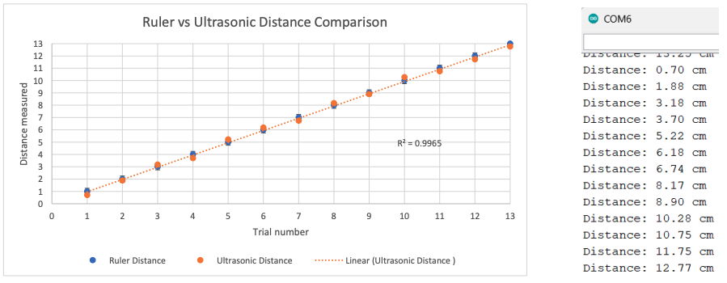
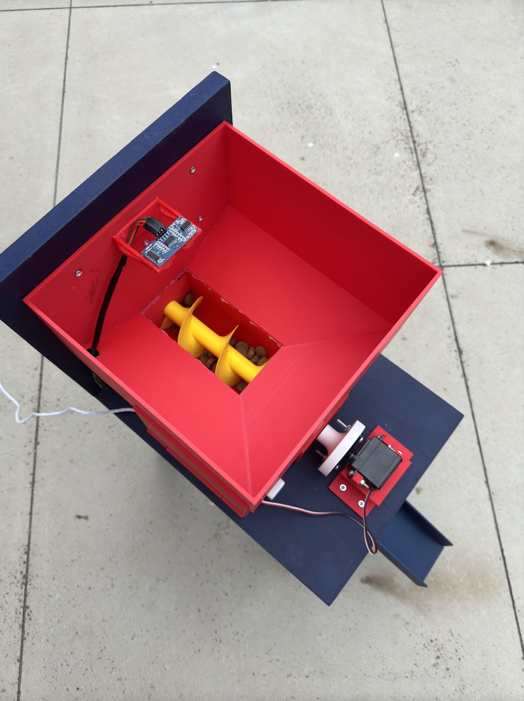

This is an automatic dog feeder I designed and built for my Year 12 VCE Systems Engineering School-Assessed Task in 2024 at Catherine McAuley College Bendigo. The task runs the full design process on one working product: brief, research, design options, a project plan, production, testing and evaluation.
My client was my sister Daisy. She is the person in our family who feeds our dog, Banjo, twice a day. She plays sport and is often not home at feeding time, and when she forgets, nobody else knows whether Banjo has been fed, so he either misses a meal or gets fed twice. I set out to build a feeder that drops a measured portion into Banjo's bowl at set times each day, so Daisy only has to deal with it every few days when it needs a refill.
After interviewing Daisy I set five constraints that could not be dropped:
Features I noted as optional and was willing to leave out included adjustable portion size and feed times, status alerts, a phone app, and a backup battery.
I researched motors (servo, DC and stepper), microcontrollers, timing (a
real-time clock against the Arduino's own millis()
function), power supplies and alert hardware. I then sketched a page of
concepts and developed three of them into full design options, each
scored against my constraints:
My client and I both preferred the Chair option. It had the most capacity for its footprint, a sealed electronics box, and it used a servo, an Arduino UNO and a clock module that I could mostly get for free.

I modelled every custom part in Autodesk Fusion 360: hopper, lid, dispensing wheel, servo mounts, axles and the feed chute. I printed them in red PLA on the school's Flashforge, and printed the larger parts at Bendigo Tech School, whose 220 mm print bed meant I had to shrink the hopper. The frame was scrap MDF and pine from the school woodwork room.

This was the largest problem in the project. The 4-spoke paddle from my chosen design did not work. With more than a handful of food in the hopper, the kibble jammed against the funnel wall instead of being pushed out. I looked at retail cereal dispensers, which are also unreliable, then at industrial farm feed systems, which almost all use an auger screw. I designed a 3D-printed auger, tested it first with a cardboard mock-up and real dog food, and it moved food cleanly and consistently.
That change flowed through the rest of the build. The auger needs to
spin in one direction without stopping, so my 180-degree servo was no
use. I switched to a continuous-rotation servo, which has its own code
quirks: write(0) to spin, detach() to stop.
The auger also ran the full length of the frame, so I redesigned the
hopper as a longer two-part unit and built a bigger
250 × 350 mm frame to leave room for the motor.

The system runs on:
My first plan was to count feeds until the hopper was empty, but that does not work when the dog's portion size changes. The ultrasonic sensor was a late addition. It measures the actual food level, and when the distance to the food passes a set point (about 14 cm, roughly one feed left) the Arduino flags it. Everything sits in a latching printed box, with the wire runs wrapped for protection.

I ran a set of tests on the finished feeder:

The 25 percent success rate was the disappointing result. The cause was the servo. It shares the Arduino's 5V pin with the clock module and the ultrasonic sensor, so under load it cannot draw enough current and stalls once the hopper is more than lightly filled. The fix is a relay and a separate 9V supply for the servo, still switched by the Arduino. That was too big a change to make before the submission deadline, but I know what the fix is.
The finished feeder measured 350 × 250 × 560 mm, well inside the 500 × 500 mm constraint. It cost about $50 against the $100 budget, with the paint as the only real expense, and it met the sealed-electronics and multi-day autonomy requirements. Against my own evaluation rubric I scored it 15 out of 20, marked down for the dispensing reliability.
What I am most happy with is that it looks and works like a real product, and that when the first mechanism failed I worked out why, researched an alternative, prototyped it cheaply and rebuilt the surrounding parts to suit, while keeping the project plan on track. The servo power problem is the one thing I would go back and fix, and I know how to do it.

The complete SAT folio, which covers the whole design and production process in detail, is available as a PDF: Automated Dog Feeder folio (PDF).